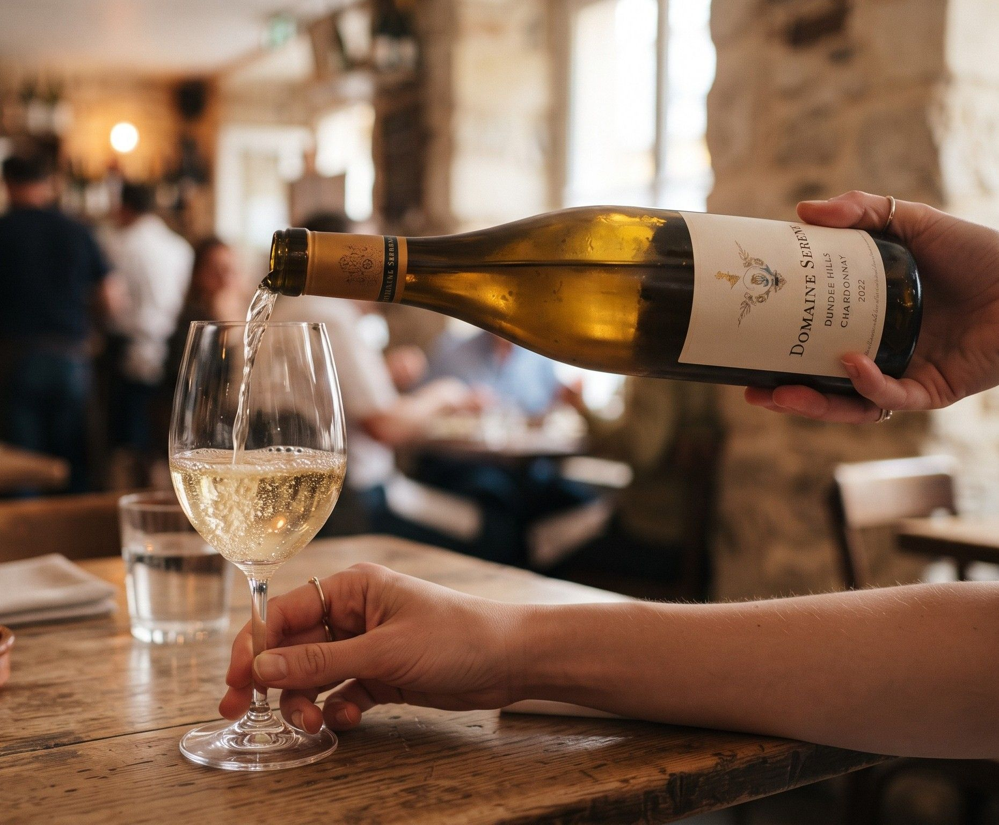

Spazio fotoimages/vino.jpg
orizzontale, almeno 1800 × 1500 px — il servizio al calice
La carta
I vini
Sessanta etichette, quasi tutte italiane, quasi tutte di gente che conosciamo. Dieci si aprono ogni sera al calice.
Come funziona
Si beve anche solo un bicchiere
La lista qui sotto è quella fissa. Le bottiglie che arrivano poche alla volta stanno sulla lavagna, e ve le racconta chi vi serve al tavolo.
Al calice
- Frascati Superiore DOCG 2023 € — Lazio, Monte Porzio Catone. Malvasia del Lazio e trebbiano: il bianco di qui, quello che si beve senza pensarci.
- Dundee Hills Chardonnay 2022 € — Oregon, Willamette Valley. L'unico forestiero della lista. Legno appena accennato, acidità dritta: regge il pecorino.
- Cesanese del Piglio DOCG 2021 € — Lazio, Piglio. Il rosso della Ciociaria, speziato e ruvido al punto giusto.
Bollicine
- Franciacorta Brut DOCG € — Lombardia. Trenta mesi sui lieviti. Si apre volentieri anche a metà cena.
- Trento DOC Brut Nature € — Trentino. Chardonnay di montagna, senza zucchero aggiunto.
- Colli di Conegliano Prosecco Extra Dry € — Veneto. Per l'aperitivo al banco, prima di sedersi.
Bianchi
- Verdicchio dei Castelli di Jesi Classico Superiore 2022 € — Marche. Sale e mandorla amara sul finale.
- Greco di Tufo DOCG 2022 € — Campania, Irpinia. Vino di terra vulcanica: spesso, quasi masticabile.
- Fiano di Avellino DOCG 2021 € — Campania. Se aspettate un anno migliora ancora. Noi lo teniamo apposta.
- Malvasia puntinata del Lazio 2023 € — Lazio, Castelli Romani. Il vitigno che quasi nessuno pianta più.
Rossi
- Chianti Classico DOCG 2021 € — Toscana. Sangiovese in purezza, il rosso che sta bene con tutto il menù.
- Etna Rosso DOC 2021 € — Sicilia, versante nord. Nerello mascalese: leggero di colore, lungo di gusto.
- Montepulciano d'Abruzzo 2022 € — Abruzzo. Quello dei pranzi lunghi.
- Barbera d'Alba 2021 € — Piemonte. Acidità viva, taglia il grasso del secondo.
A fine pasto
- Vin Santo del Chianti DOCsolo al calice € — Toscana. Con i biscotti secchi, come si deve.
- Passito di Pantelleria € — Sicilia. Zibibbo appassito al sole.
 Spazio foto
Spazio foto
images/cantina.jpg
orizzontale, 1600 × 1070 px
Il vino della casa
“Rosso o bianco, in caraffa da mezzo litro. È quello che beviamo noi dopo il servizio.” Alfredo
Tappo riportato a casa senza sovrapprezzo. Se una bottiglia non vi convince appena versata, la cambiamo.
Da completare su questa pagina
I prezzi sono segnati € —: vanno
sostituiti con quelli veri. Anche le etichette sono un esempio di
struttura — dimmi la tua lista e la metto al posto di questa. Le due
foto della pagina vanno in
sito-alfredo/images/ con i nomi vino.jpg e
cantina.jpg.